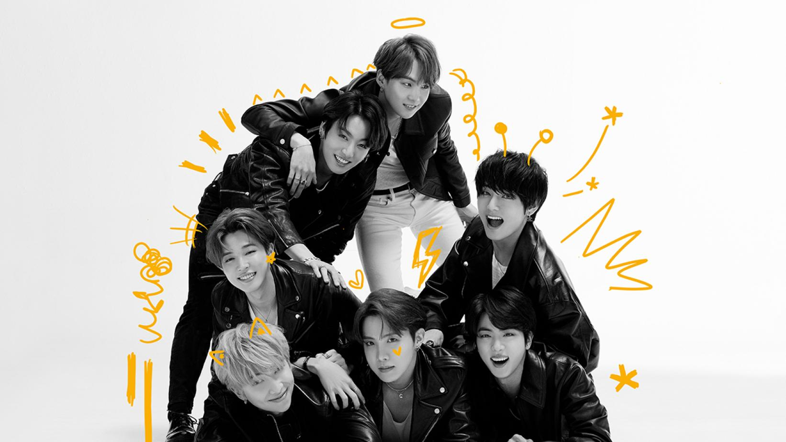

BTS(auch Bangtan Boys; Hangeul: 방탄소년단, revidierte Romanisierung: Bangtan Sonyeondan) ist eine südkoreanische Boygroup, bestehend aus sieben Mitgliedern, die 2013 von Big Hit Entertainment gegründet wurde.
Der Name der Band Bangtan Sonyeondan ist eine Kombination aus 방탄 („kugelsicher“) und 소년단 („Pfadfinder“).Im Juli 2017 wurde dem Akronym „BTS“ außerdem die Bedeutung Beyond the Scene (englisch für Jenseits der Szene) hinzugefügt